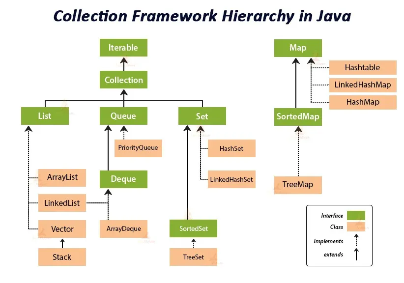
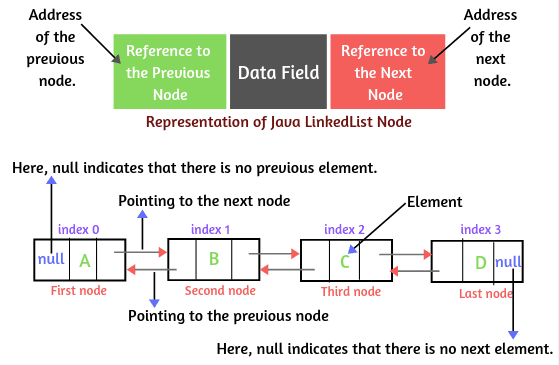
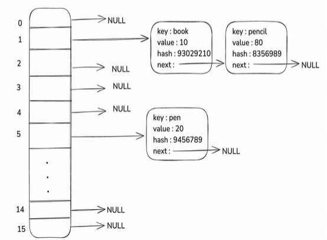
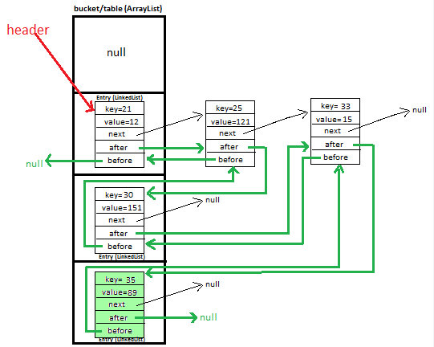

Collections Framework
What is java Collection Framework?
- Added in java version 1.2
- Collections is nothing but group of objects
- Present in
java.utilpackage - Framework provides architecture to manage group of objects.
Why we need java Collection Framework?
- Prior to java collections framework, we have Array, Vector, Hash Tables.
- But problem with that is, there is no common interface and hence, its difficult to remember methods for each.
Collection Framework hierarchy

Iterable:
It is used to traverse the collection.
public class Practice {
public static void main(String[] args) {
List<Integer> list = new ArrayList<>();
list.add(10);
list.add(20);
list.add(30);
list.add(40);
list.add(50);
Iterator<Integer> iterator = list.iterator();
while (iterator.hasNext()){
int value = iterator.next();
System.out.println(value);
if(value == 30){
iterator.remove();
}
}
System.out.println("foreach method: ");
list.forEach((Integer element) -> System.out.print(element + " "));
}
}Collection:
- It represents the group of objects. It is an interface which provided methods to work on group of objects.
- Below are the most common used methods which are implemented by its child classes like ArrayList, Stack, LinkedList etc.
| S.NO | Method | Available In | Usage |
|---|---|---|---|
| 1 | size() | Java 1.2 | Returns the total number of elements present in the collection. |
| 2 | isEmpty() | Java 1.2 | Checks if the collection is empty. Returns true or false. |
| 3 | contains(Object o) | Java 1.2 | Searches for an element in the collection. Returns true or false. |
| 4 | toArray() | Java 1.2 | Converts the collection into an array. |
| 5 | add(E e) | Java 1.2 | Inserts an element into the collection. |
| 6 | remove(Object o) | Java 1.2 | Removes an element from the collection. |
| 7 | addAll(Collection c) | Java 1.2 | Inserts all elements from another collection into the current collection. |
| 8 | removeAll(Collection c) | Java 1.2 | Removes all elements from the current collection that are also present in the specified collection. |
| 9 | clear() | Java 1.2 | Removes all elements from the collection. |
| 10 | equals(Object o) | Java 1.2 | Checks whether two collections are equal. |
| 11 | stream() / parallelStream() | Java 1.8 | Provides a way to process collection elements using stream operations like filtering, mapping, and processing. |
| 12 | iterator() | Java 1.2 | Returns an iterator to traverse elements of the collection. |
Collection vs Collections
| Feature | Collection | Collections |
|---|---|---|
| Type | Interface | Utility Class |
| Package | java.util | java.util |
| Purpose | Represents a group of objects | Provides utility methods for collections |
| Implemented by | List, Set, Queue | Not implemented (static methods only) |
| Methods type | Instance methods | Static methods |
| Example methods | add(), remove(), size() | sort(), reverse(), shuffle() |
Common Methods of Collections Class
| Method | Usage |
|---|---|
sort() | Sort list |
reverse() | Reverse list |
shuffle() | Random order |
min() | Find minimum |
max() | Find maximum |
binarySearch() | Search element |
Queue
- It is a child interface of Collection interface.
- Generally it follows FIFO approach. (except PriorityQueue)
- Supports all the methods available in collection + some other methods mentioned below -
| S.No | Method | Usage |
|---|---|---|
| 1 | add(E e) | Inserts the element into the queue. Returns true if insertion is successful and throws an Exception if insertion fails. Null elements are not allowed (throws NullPointerException). |
| 2 | offer(E e) | Inserts the element into the queue. Returns true if insertion is successful and false if insertion fails. Null elements are not allowed (throws NullPointerException). |
| 3 | poll() | Retrieves and removes the head of the queue. Returns null if the queue is empty. |
| 4 | remove() | Retrieves and removes the head of the queue. Throws NoSuchElementException if the queue is empty. |
| 5 | peek() | Retrieves the element at the head of the queue but does not remove it. Returns null if the queue is empty. |
| 6 | element() | Retrieves the element at the head of the queue but does not remove it. Throws NoSuchElementException if the queue is empty. |
| Operation | Returns null if empty | Throws Exception if empty |
|---|---|---|
| Remove Head | poll() | remove() |
| View Head | peek() | element() |
| Insert | offer() | add() |
Comparator vs. Comparable
Comparator and Comparable both provides a way to sort Collection of objects.
- Primitive Collection sorting:
Using Arrays.sort():
public class Practice {
public static void main(String[] args) {
int[] arr = {10, 30, 50, 60, 20, 35, 45};
Arrays.sort(arr); // Sorted in ascending order
}
}Using Collections.sort():
public class Practice {
public static void main(String[] args) {
ArrayList<String> wordsList = new ArrayList<>();
wordsList.add("banana");
wordsList.add("apple");
wordsList.add("cherry");
wordsList.add("date");
System.out.println("Original list: " + wordsList); // Original list: [banana, apple, cherry, date]
Collections.sort(wordsList);
System.out.println("Sorted list: " + wordsList); // Sorted list: [apple, banana, cherry, date]
}
}- Object Collection sorting:
public class Practice {
public static void main(String[] args) {
//Using Collections.sort()
List<Person> people = new ArrayList<>(Arrays.asList(
new Person("Alice", 30, 65.5),
new Person("Bob", 25, 75.0),
new Person("Charlie", 35, 80.0)
));
System.out.println("Original people list: " + people);
Collections.sort(people); // ❌ CE: reason: no instance(s) of type variable(s) T exist so that Person conforms to Comparable<? super T>
System.out.println("Sorted people list: " + people);
//Using Arrays.sort()
Person[] peopleArr = {new Person("Alice", 30, 65.5),
new Person("Bob", 25, 75.0),
new Person("Charlie", 35, 80.0)};
System.out.println("Original people list: " + people);
Arrays.sort(peopleArr); // Runtime error
System.out.println("Sorted people list: " + people);
}
}
class Person{
String name;
int age;
double weight;
public Person(String name, int age, double weight) {
this.name = name;
this.age = age;
this.weight = weight;
}
@Override
public String toString() {
return "Person [name=" + name + ", age=" + age + ", weight=" + weight + " kgs]";
}
}Output:
Exception in thread "main" java.lang.ClassCastException: class Person cannot be cast to class java.lang.Comparable (Person is in unnamed module of loader 'app'; java.lang.Comparable is in module java.base of loader 'bootstrap')The error occurs because the Person class does not implement the Comparable interface, and there is no way for the sorting method to know how to compare two Person objects. To sort custom objects like Person, we need to provide a way to compare these objects. Java offers two main approaches to achieve this:
- Implementing the
ComparableInterface: This allows a class to define its natural ordering by implementing thecompareTomethod. - Using the
ComparatorInterface: This allows us to create separate classes or lambda expressions to define multiple ways of comparing objects.
How to Use the Comparable Interface
- Java provides a Comparable interface to define a natural ordering for objects of a user-defined class.
- By implementing the Comparable interface, a class can provide a single natural ordering that can be used to sort its instances.
- This is particularly useful when you need a default way to compare and sort objects.
- The Comparable interface contains a single method, compareTo(), which compares the current object with the specified object for order. The method returns:
- A negative integer if the current object is less than the specified object.
(o1 < o2) - Zero if the current object is equal to the specified object.
(o1 == o2) - A positive integer if the current object is greater than the specified object.
(o1 > o2)
class PersonV2 implements Comparable<PersonV2> {
String name;
int age;
double weight;
public PersonV2(String name, int age, double weight) {
this.name = name;
this.age = age;
this.weight = weight;
}
@Override
public String toString() {
return "PersonV2 [name=" + name + ", age=" + age + ", weight=" + weight + " kgs]";
}
@Override
public int compareTo(PersonV2 other) {
return this.age - other.age;
}
}In this implementation, the compareTo() method compares the age attribute of the current PersonV2 object with the age attribute of the specified PersonV2 object by subtracting one age from the other. We can also use Integer.compare(this.age, other.age) instead of performing the arithmetic operation manually. Now we can sort a list of PersonV2 objects using Collections.sort():
public class Practice {
public static void main(String[] args) {
List<PersonV2> people = new ArrayList<>(Arrays.asList(
new PersonV2("Alice", 30, 65.5),
new PersonV2("Bob", 25, 75.0),
new PersonV2("Charlie", 35, 80.0)
));
System.out.println("Original people list: " + people);
Collections.sort(people); // Ascending order
System.out.println("Sorted people list: " + people);
}
}Output:
Original people list: [PersonV2 [name=Alice, age=30, weight=65.5 kgs], PersonV2 [name=Bob, age=25, weight=75.0 kgs], PersonV2 [name=Charlie, age=35, weight=80.0 kgs]]
Sorted people list: [PersonV2 [name=Bob, age=25, weight=75.0 kgs], PersonV2 [name=Alice, age=30, weight=65.5 kgs], PersonV2 [name=Charlie, age=35, weight=80.0 kgs]]Limitations of Comparable:
| Issue | Explanation |
|---|---|
| Only one sorting logic | compareTo() allows only one natural ordering |
| Changes class behavior | You must modify the class itself |
| Not flexible | Cannot easily support multiple sorting strategies |
If we want to change it to reverse ordering then we need to modify compareTo method's implementation in the PersonV2 class itself -
@Override
public int compareTo(PersonV2 other) {
return other.age - this.age; // reverse order
}How to Use the Comparator Interface
- The Comparator interface in Java provides a way to define multiple ways of comparing and sorting objects.
- Unlike the Comparable interface, which allows only a single natural ordering, Comparator is designed to offer flexibility by allowing multiple sorting strategies.
- This makes it particularly useful for scenarios where objects need to be sorted in different ways.
How Comparator Allows for Multiple Ways of Ordering Objects?
//Person class
public class Person{
String name;
int age;
double weight;
public Person(String name, int age, double weight) {
this.name = name;
this.age = age;
this.weight = weight;
}
@Override
public String toString() {
return "Person [name=" + name + ", age=" + age + ", weight=" + weight + " kgs]";
}
}
// Comparator by Name
public class PersonNameComparator implements Comparator<Person> {
@Override
public int compare(Person p1, Person p2) {
return p1.getName().compareTo(p2.getName());
}
}
// Comparator by Age
public class PersonAgeComparator implements Comparator<Person> {
@Override
public int compare(Person p1, Person p2) {
return p1.getAge() - p2.getAge();
}
}
// Comparator by Weight
public class PersonWeightComparator implements Comparator<Person> {
@Override
public int compare(Person p1, Person p2) {
return (int) (p1.getWeight() - p2.getWeight());
}
}
// Usage
public class Practice {
public static void main(String[] args) {
List<Person> people = new ArrayList<>(Arrays.asList(
new Person("Alice", 30, 65.5),
new Person("Bob", 25, 75.0),
new Person("Charlie", 35, 80.0)
));
System.out.println("Original people list: " + people);
Collections.sort(people, new PersonNameComparator());
System.out.println("Sorted people list by name: " + people);
Collections.sort(people, new PersonAgeComparator());
System.out.println("Sorted people list by age: " + people);
Collections.sort(people, new PersonWeightComparator());
System.out.println("Sorted people list by weight: " + people);
}
}Output:
Original people list: [Person [name=Alice, age=30, weight=65.5 kgs], Person [name=Bob, age=25, weight=75.0 kgs], Person [name=Charlie, age=35, weight=80.0 kgs]]
Sorted people list by name: [Person [name=Alice, age=30, weight=65.5 kgs], Person [name=Bob, age=25, weight=75.0 kgs], Person [name=Charlie, age=35, weight=80.0 kgs]]
Sorted people list by age: [Person [name=Bob, age=25, weight=75.0 kgs], Person [name=Alice, age=30, weight=65.5 kgs], Person [name=Charlie, age=35, weight=80.0 kgs]]
Sorted people list by weight: [Person [name=Alice, age=30, weight=65.5 kgs], Person [name=Bob, age=25, weight=75.0 kgs], Person [name=Charlie, age=35, weight=80.0 kgs]]Instead of this - Collections.sort(people, new PersonNameComparator()); we can also use lambda expressions ->
Collections.sort(people, (Person p1, Person p2) -> (p2.getName().compareTo(p1.getName())));PriorityQueue
PriorityQueue is a queue implementation where elements are processed based on priority.
Key Properties
- Uses binary heap internally
- Default ordering is natural ordering
- Smallest element has highest priority
- Null elements not allowed
- Duplicate elements allowed
public class Practice {
public static void main(String[] args) {
// Min Heap by default
PriorityQueue<Integer> queue = new PriorityQueue<>();
queue.add(10);
queue.add(50);
queue.add(30);
System.out.println(queue); // [10, 50, 30] (Smallest element has highest priority)
System.out.println(queue.poll()); // 10 (Smallest element removed first.)
//Custom Priority Using Comparator (Max Heap)
PriorityQueue<Integer> pq = new PriorityQueue<>(Collections.reverseOrder());
pq.add(10);
pq.add(50);
pq.add(30);
System.out.println(pq); // [50, 10, 30]
}
}Deque (Double Ended Queue)
- A Deque allows insertion and removal of elements from both ends (front and rear).
- It extends the
Queueinterface. - Common implementations:
- ArrayDeque (most commonly used)
- LinkedList
- Important Deque Methods
Deque provides two sets of operations:
Front operations
| Method | Description |
|---|---|
addFirst() | Insert element at front |
offerFirst() | Insert at front |
removeFirst() | Remove front element |
pollFirst() | Remove front element |
getFirst() | View front element |
peekFirst() | View front element |
Rear operations
| Method | Description |
|---|---|
addLast() | Insert element at rear |
offerLast() | Insert at rear |
removeLast() | Remove last element |
pollLast() | Remove last element |
getLast() | View last element |
peekLast() | View last element |
import java.util.ArrayDeque;
import java.util.Deque;
public class Test {
public static void main(String[] args) {
Deque<Integer> dq = new ArrayDeque<>();
dq.addFirst(10);
dq.addLast(20);
dq.addFirst(5);
System.out.println(dq); // [5, 10, 20]
}
}Using Deque as Stack
Deque can act as a stack (LIFO).
Deque<Integer> stack = new ArrayDeque<>();
stack.push(10);
stack.push(20);
System.out.println(stack.pop()); // 20Methods used internally:
| Stack Method | Deque Equivalent |
|---|---|
push() | addFirst() |
pop() | removeFirst() |
peek() | peekFirst() |
Using Deque as Queue
Deque<Integer> queue = new ArrayDeque<>();
queue.addLast(10);
queue.addLast(20);
System.out.println(queue.removeFirst()); // 10List
- List is an ordered collection of objects.
- In Queue, insertion/removal/access can only happen at start or end of the queue, while in List, data can be inserted, accessed, removed from anywhere.
ArrayList
- Unlike traditional arrays which have a fixed size, an ArrayList can automatically grow or shrink as elements are added or removed.
- Elements are stored in the order they are inserted and can be accessed using a zero-based index.
- Can have duplicate or null values.
- Methods available in
Listinterface (ArrayListimplementation):
public class Practice {
public static void main(String[] args) {
List<Integer> list = new ArrayList<>();
list.add(10);
list.add(25);
list.add(12);
list.add(35);
List<Integer> list1 = new ArrayList<>();
list1.add(20);
list1.add(15);
list1.add(65);
list.addAll(2, list1);
list.forEach((Integer element) -> System.out.print(element + " ")); // [10 25 20 15 65 12 35]
//get(int index)
System.out.println(list.get(3)); // 15
System.out.println();
list.replaceAll((Integer val) -> -1 * val);
list.forEach((Integer element) -> System.out.print(element + " ")); // [-10 -25 -20 -15 -65 -12 -35]
list.sort((Integer v1, Integer v2) -> v1 - v2); // Ascending
list.sort((Integer v1, Integer v2) -> v2 - v1); // Descending
ListIterator<Integer> it = list.listIterator();
// Forward Traversal
while(it.hasNext()) {
Integer val = it.next();
System.out.println(val);
if(val == 20) {
it.set(200); // Modify Element Using ListIterator
}
}
// Backward Traversal
while(it.hasPrevious()) {
System.out.println(it.previous());
}
}
}Internal working of ArrayList:
- Creating an ArrayList
- No internal array is created at this moment.
- Memory allocation happens when the first element is added.
- Adding the First Element
- An internal array is created with default capacity 10.
- The first element is stored at index 0.
- Adding Elements Up to Capacity
- Elements are added one by one.
- No resizing happens because there is enough space.
- Adding the 11th Element (Resizing Happens)
- Now the internal array becomes full. ArrayList performs the following operations:
- Creates a new array with larger size
- New capacity = old capacity + (old capacity / 2) => 10 + 5 = 15
- Copies old elements to the new array
- Adds the new element
LinkedList
- LinkedList is a linear data structure where elements are stored as nodes, and each node contains:
- Data
- Reference to next node
- Reference to previous node (in Java implementation)
- Java LinkedList is implemented as a:
Doubly Linked List

- It implements both
DequeandListand hence it supportsDequemethods likeaddFirst(),removeFirst(),addLast(),removeLast()etc. along withListmethods likeadd(),get(),set()etc.
public class Test {
public static void main(String[] args) {
LinkedList<Integer> list = new LinkedList<>();
list.add(10);
list.add(20);
list.add(30);
System.out.println(list); // [10, 20, 30]
}
}- Each element is stored as a Node object:
class Node {
Object data;
Node prev;
Node next;
}First node → head
Last node → tailVector
- Works like ArrayList. But thread-safe by default. It is a legacy class.
- Puts lock when operation is performed on
Vector. - Less efficient than
ArrayListas for each operation it do lock/unlock internally (all methods aresynchronized).
public class Test {
public static void main(String[] args) {
Vector<Integer> v = new Vector<>();
v.add(10);
v.add(20);
v.add(30);
System.out.println(v);
}
}- For concurrent scenarios use below options instead of
Vector
Option 1: ArrayList + Synchronization
List<Integer> list = Collections.synchronizedList(new ArrayList<>());Option 2: CopyOnWriteArrayList
List<Integer> list = new CopyOnWriteArrayList<>();Stack
Stackis a LIFO (Last In First Out) data structure. It is also a legacy class.Stack extends Vectorhence all methods are synchronized.
public class Test {
public static void main(String[] args) {
Stack<Integer> stack = new Stack<>();
stack.push(10);
stack.push(20);
stack.push(30);
System.out.println(stack.pop()); // 30
System.out.println(stack.peek()); // 20
}
}- Important Methods
| Method | Description |
|---|---|
push() | Add element |
pop() | Remove top element |
peek() | View top element |
empty() | Check if empty |
search() | Find element position |
- Modern Replacement: Use
Deque(ArrayDeque) instead of Stack.
Deque<Integer> stack = new ArrayDeque<>();
stack.push(10);
stack.push(20);
System.out.println(stack.pop()); // 20Map
Mapis used to store data in key-value pairs.- Map Hierarchy:
Map
|
|---- HashMap
|---- LinkedHashMap
|---- TreeMap
|---- Hashtable (legacy)- Properties of Map Interface
- Stores Data in Key-Value Pair
- Keys Must Be Unique (Duplicate keys overwrite old value)
- Values Can Be Duplicate
- Not Part of Collection Interface
- Can Have One Null Key (HashMap)
- Important methods:
| Method | Description |
|---|---|
put() | Insert/update |
get() | Get value |
remove() | Delete entry |
containsKey() | Check key |
containsValue() | Check value |
keySet() | Get all keys |
values() | Get all values |
entrySet() | Get key-value pairs |
size() | Count entries |
isEmpty() | Check empty |
clear() | Remove all |
Hashmap
HashMapstores data in key-value pairs and provides O(1) average time complexity for put/get operations.HashMapusesArray + Hashing + Buckets + LinkedList/Tree
Internal working of HashMap

- Create HashMap:
Map<String, Integer> map = new HashMap<>();- Java creates new HashMap object in memory.
- The following fields are initialized with default values.
- capacity = 16
- load factor = .75f
- threshold = 12
- capacity * load factor = 16 * .75 = 12. So the table resizes when 12 entries are added.
- At this point no internal array is being created. To save memory java does not create an array when you create an instance of HashMap. This is called Lazy Initialization.
- Add/put key-value pair:
When we do -
map.put(key, value);Internally -
- The array is initialized with default size 16.
- Adding element takes place in below steps
Step 1: Hashing
- Calculate hashcode:
int hash = key.hashCode();
Step 2: Find index
- Index is calculated using =>
index = (n - 1) & hash;
Step 3: Inserting the node
- If no node exists at that index, a new <Key, Value> node is inserted directly.
- If a node already exists at that index (collision),
- Java traverses the linked list (or tree if it's been treeified) to:
- Check if the key already exists ➡ update value.
- If the key is new ➡ insert the new node at the end of the list.
class Node<K,V> {
int hash;
K key;
V value;
Node<K,V> next;
}Step 4: Collision Handling
- Collision = when two keys map to same bucket
- Handled using: LinkedList (before java 8) and LinkedList + Tree (red-black tree) (java 8+).
Step 5: Treeification
- When collisions increase:
If bucket size > 8 → convert to Red-Black Tree
If bucket size < 6 → convert back to LinkedListVisual flow:
put(K, V)
↓
hashCode()
↓
index calculation
↓
Go to bucket
↓
Is bucket empty?
↓ Yes → Insert
↓ No
Check equals()
↓
Collision?
↓
Add to LinkedList / TreeWhat is Treeify Threshold?
- Treeify Threshold = 8
- It is the threshold at which a bucket (linked list) in a HashMap is converted into a balanced tree (Red-Black Tree).
- Treeification happens when:
- Number of nodes in a bucket ≥ 8 (TREEIFY_THRESHOLD)
- AND total HashMap capacity ≥ 64 (MIN_TREEIFY_CAPACITY)
- Otherwise, instead of treeifying, the map will resize (rehash).
equals() and hashCode() Contract
- Rule 1:
If two objects are equal (equals() returns true) ➡ they MUST have same hashCode()
- Rule 2:
If two objects have same hashCode() ➡ they may or may not be equal
How HashMap uses them (get(key))?
hashCode()is called to find correct bucket.- Traverse bucket
equals()is called ->if (existingKey.equals(searchKey))
- If TRUE → return value
- If not found → return null
hashCode() => Finds bucket (fast lookup) equals() => Finds exact key inside bucket
LinkedHashMap

- LinkedHashMap is a HashMap + Linked List combination
- 👉 It maintains:
✅ Key-Value storage like HashMap
✅ Insertion order (or access order) using a doubly linked list - It maintains Insertion Order
| Feature | HashMap | LinkedHashMap |
|---|---|---|
| Order | ❌ No order | ✅ Maintains order |
| Performance | Slightly faster | Slightly slower |
| Memory | Less | More (extra pointers) |
- Works same as HashMap and additionally maintains before and after pointers.
TreeMap
- TreeMap is a Sorted Map implementation in Java.
- It stores key-value pairs in sorted order of keys using a 👉 Red-Black Tree (self-balancing BST)
- Supports both Natural and custom ordering:
Natural Ordering:
Map<Integer, String> map = new TreeMap<>();
map.put(3, "C");
map.put(1, "A");
map.put(2, "B");
System.out.println(map);
// Output: {1=A, 2=B, 3=C}Custom ordering:
Map<Integer, String> map =
new TreeMap<>(Comparator.reverseOrder());Note:
- No null key
- Keys must be comparable Otherwise we will get
ClassCastException
| Feature | HashMap | LinkedHashMap | TreeMap |
|---|---|---|---|
| Order | ❌ None | ✅ Insertion | ✅ Sorted |
| Structure | Hash Table | Hash + DLL | Red-Black Tree |
| Time | O(1) | O(1) | O(log n) |
Hashtable
- A Hashtable in Java is a thread-safe key–value data structure that stores data using hashing.
- Introduced before Java Collections Framework (legacy class).
import java.util.Hashtable;
Hashtable<Integer, String> map = new Hashtable<>();
map.put(1, "Java");
map.put(2, "Spring");
System.out.println(map.get(1)); // Java- All methods are synchronized
- No null allowed
map.put(null, "value"); // ❌ NullPointerException
map.put(1, null); // ❌ NullPointerExceptionHashtable vs HashMap
| Feature | Hashtable | HashMap |
|---|---|---|
| Thread-safe | ✅ Yes | ❌ No |
| Performance | Slow | Fast |
| Null key | ❌ Not allowed | ✅ One null key |
| Null value | ❌ Not allowed | ✅ Multiple |
| Synchronization | Method-level | Not synchronized |
| Legacy | ✅ Yes | ❌ Modern |
Set
- Set Interface represents a collection of unique elements.
- Most implementations allow only one null
- Implementations:
| Implementation | Order |
|---|---|
| HashSet | ❌ No order |
| LinkedHashSet | ✅ Insertion order |
| TreeSet | ✅ Sorted order |
- HashSet internally uses:
- HashMap
map.put(element, PRESENT);Value is dummy → only keys matter
- No Index-Based Access
- Important Methods of Set Interface:
| Category | Method | Description |
|---|---|---|
| ➕ Add | add(E e) | Adds element if not already present |
| ➕ Add | addAll(Collection<? extends E> c) | Adds all elements from another collection |
| ❌ Remove | remove(Object o) | Removes a specific element |
| ❌ Remove | removeAll(Collection<?> c) | Removes all matching elements |
| ❌ Remove | retainAll(Collection<?> c) | Keeps only common elements (intersection) |
| ❌ Remove | clear() | Removes all elements |
| 🔍 Search | contains(Object o) | Checks if element exists |
| 🔍 Search | containsAll(Collection<?> c) | Checks if all elements exist |
| 🔍 Search | isEmpty() | Checks if set is empty |
| 🔍 Search | size() | Returns number of elements |
| 🔁 Traversal | iterator() | Returns iterator to traverse set |
| 🔄 Conversion | toArray() | Converts set to Object array |
| 🔄 Conversion | <T> T[] toArray(T[] a) | Converts set to typed array |
Note:
- add() returns false if duplicate
- No get(index) method ❌
- Order depends on implementation (HashSet / LinkedHashSet / TreeSet)
Concurrent Collections
- Concurrent Collections are thread-safe collection classes designed to handle multiple threads efficiently without blocking everything.
- They are part of:
java.util.concurrentpackage
Traditional Approach
Collections.synchronizedList(list);Limitations:
- Uses single lock
- Only one thread at a time ❌
- Poor performance under high concurrency
Concurrent Collections (Solution)
- Use fine-grained locking / lock-free algorithms
- Better performance
- Higher scalability
- Safe in multi-threaded environments
Important Concurrent Collections in Java:
| Collection | Type | Ordering | Thread-Safety Mechanism | Best Use Case |
|---|---|---|---|---|
| ConcurrentHashMap | Map | ❌ No order | CAS + fine-grained locking | High-performance concurrent key-value store |
| CopyOnWriteArrayList | List | ✅ Insertion order | Copy-on-write (immutable snapshot) | Read-heavy applications |
| CopyOnWriteArraySet | Set | ✅ Insertion order | Copy-on-write | Read-heavy + no duplicates |
| ConcurrentSkipListMap | Map | ✅ Sorted | Skip list + CAS | Concurrent sorted data |
| ConcurrentSkipListSet | Set | ✅ Sorted | Skip list + CAS | Concurrent sorted set |
| ArrayBlockingQueue | Queue | ✅ FIFO | Locks (bounded) | Producer-Consumer (fixed size) |
| LinkedBlockingQueue | Queue | ✅ FIFO | Separate locks (unbounded/bounded) | High-throughput producer-consumer |
| PriorityBlockingQueue | Queue | ✅ Priority-based | Heap + locks | Task scheduling |
| DelayQueue | Queue | ⏳ Time-based | Priority queue + delay | Scheduled task execution |
Hashtable vs ConcurrentHashMap
| Feature | Hashtable | ConcurrentHashMap |
|---|---|---|
| Thread Safety | ✅ Yes | ✅ Yes |
| Locking | 🔒 Whole map (coarse) | 🔓 Fine-grained (bucket/node level) |
| Concurrency | ❌ Low | 🚀 High |
| Performance | ❌ Slow | ✅ Fast |
| Null Key | ❌ Not allowed | ❌ Not allowed |
| Null Value | ❌ Not allowed | ❌ Not allowed |
| Iteration | Not fail-safe | ✅ Weakly consistent |
| Introduced | Legacy (Java 1.0) | Modern (Java 1.5) |
Example Scenario
🔴 Hashtable:
map.put(1, "A"); // locks entire map- Other threads:
Cannot read
Cannot write
🟢 ConcurrentHashMap:
map.put(1, "A"); // locks only one bucket- Other threads:
Can read other buckets
Can write other buckets
DSA Quick Summary: Which Data Structure to Use?
Complexities below are for common Java implementations and average-case behavior.
| Data Structure (Java) | Use When | Ordering | Access | Search | Insert | Delete | Notes |
|---|---|---|---|---|---|---|---|
Array | Fixed size, index-based problems | Index order | O(1) | O(n) | O(n)* | O(n)* | *Middle insert/delete shifts elements |
ArrayList | Frequent reads + append operations | Insertion order | O(1) | O(n) | O(1) amortized (end), O(n) middle | O(n) | Best general-purpose dynamic array |
LinkedList | Frequent insert/delete at ends or via iterator/node ref | Insertion order | O(n) | O(n) | O(1) at ends, O(n) by index | O(1) at ends, O(n) by index | Poor random index access |
ArrayDeque (Deque) | Efficient stack/queue implementation | Depends on usage | O(1) at ends | O(n) | O(1) at ends | O(1) at ends | Prefer over legacy Stack |
PriorityQueue (Heap) | Need repeated min/max or top-k | Priority order (not fully sorted) | O(1) for peek | O(n) | O(log n) | O(log n) for poll | Useful for Top-K and scheduling |
HashMap | Fast key-value lookup | No order | N/A | O(1) avg (get) | O(1) avg (put) | O(1) avg | Worst-case may degrade |
LinkedHashMap | Need map + insertion/access order | Maintains order | N/A | O(1) avg | O(1) avg | O(1) avg | Good for LRU-style cache patterns |
TreeMap | Need sorted keys/range queries | Sorted by key | N/A | O(log n) | O(log n) | O(log n) | Red-Black Tree based |
HashSet | Need uniqueness + fast membership test | No order | N/A | O(1) avg | O(1) avg | O(1) avg | Backed by HashMap |
LinkedHashSet | Need uniqueness + insertion order | Insertion order | N/A | O(1) avg | O(1) avg | O(1) avg | Slight memory overhead vs HashSet |
TreeSet | Need unique + sorted elements | Sorted | N/A | O(log n) | O(log n) | O(log n) | Good for range operations |
Quick DSA Picks
- Top K frequent elements →
HashMap + PriorityQueue - Fast lookup by key →
HashMap - Sorted keys / floor / ceiling / ranges →
TreeMap/TreeSet - Unique elements (no ordering needed) →
HashSet - Stack / Queue implementation →
ArrayDeque - Frequent random index access →
ArrayList - Frequent insert/delete in middle with node references →
LinkedList